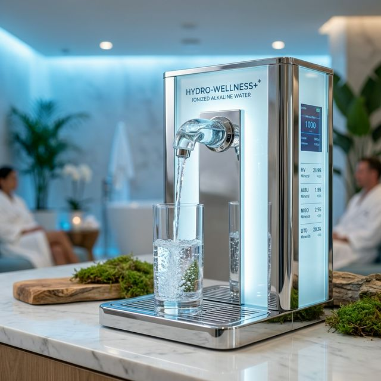
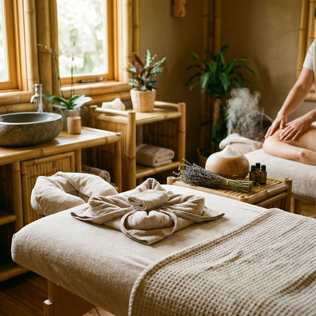

Agua Kangen
Transforma tu salud desde la base celular. Somos distribuidores oficiales de la mejor tecnología de agua alcalina e hidrogenada del mundo.
Saber más →Descubre el equilibrio perfecto a través de nuestras tres líneas de vida: Agua Alcalina, Masajes de conexión y Gestión Emocional.

Como distribuidores oficiales de Enagic ®, traemos a tu vida la tecnología japonesa líder en ionización. No es solo agua, es vitalidad celular.
Un enfoque tridimensional hacia tu bienestar total
Transforma tu salud desde la base celular. Somos distribuidores oficiales de la mejor tecnología de agua alcalina e hidrogenada del mundo.
Saber más →Técnicas milenarias combinadas con presencia absoluta. Shiatsu, Tantra y masajes diseñados para liberar tensiones y reconectar con el placer de existir.
Reservar sesión →Gestiona tus emociones para liberar tu cuerpo. Acompañamiento profundo para desbloquear lo que te impide brillar y reconectar con tu esencia.
Iniciar camino →Nuestros masajes no son solo relajación, son una ceremonia de reconexión profunda. Combinamos el Shiatsu tradicional con el Masaje Sensitivo para despertar la consciencia de cada célula.

"Lo que el corazón calla, el cuerpo lo grita."
En Salud Equilibrio te guiamos para identificar y liberar emociones atrapadas, permitiendo que tu sistema nervioso recupere su paz natural y tu cuerpo su capacidad innata de sanar.
Alineamos tus latidos con tus acciones para una vida sin conflictos internos.
Recupera tu luz propia eliminando los velos de bloqueos pasados.
Donde la salud se encuentra con la creatividad